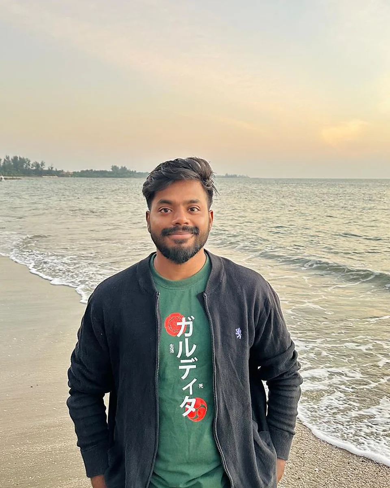

About
I am a lecturer, researcher, and lifelong learner based in Dhaka, Bangladesh.

Reliable learning and intelligent decision-making.
My research is motivated by how intelligent systems learn, adapt, and make decisions under real-world constraints. Alongside language models and agentic AI, I am interested in federated learning, optimization, reinforcement learning, and autonomous systems. I want to understand how these approaches can support dependable learning and decision-making.
Today, I focus on reliable foundation-model and agentic AI systems. I value work that moves between implementation and careful evaluation, and I remain curious about what adjacent fields can teach me.
I am seeking fully funded Ph.D. opportunities for Spring / Fall 2027 in reliable AI systems, LLMs, and agentic AI.
Education
- 2020–2024
B.Sc. in Computer Science and Engineering
Military Institute of Science and Technology, Bangladesh
Graduated March 2024. CGPA 3.83/4.00; ranked 4th of 88. My undergraduate thesis explored machine-learning-driven adaptive mobile-banking interfaces.
Advisors: Iyolita Islam and Dr. Muhammad Nazrul Islam.
Research & professional experience
- Apr 2024–present
Lecturer, Department of CSE
MIST, Dhaka
Teaching programming and computer systems courses; co-supervising undergraduate research, theses, and applied computing projects.
- Nov 2025–present
Research Collaborator, Reliable AI and Intelligent Systems
MIST, Dhaka
Research across LLM/VLM systems, multimodal agents, trustworthy machine learning, evaluation, and failure analysis.
- Mar 2026–present
Co-Investigator, Neuroadaptive AI
MIST Research Grant · PI: Dr. T. M. Shahriar Sazzad
Transformer-based learning over 32-channel EEG for workload, vigilance, and affective-state modeling.
Leadership & academic service
- May 2025–present
Project Coordinator
Mobile and App Development Project for the Bangladesh Army, MIST.
- Jul 2024–present
Moderator, MIST Cyber Security Club
Workshops, CTF activities, student events, and technical operations.
- Feb 2023–Mar 2024
Executive Director, MIST Computer Club
Programming competitions, technical seminars, and student computing initiatives.
- Mar 2020–Oct 2023
Software and Communication Team, MIST Mars Rover Society
Rover software, communication, and autonomous-control activities.
Honors & awards
- 2025
Top 2% Paper Award
IEEE ICCIT · agricultural mobile-application usability paper
- 2025
Selected project demonstration
BEAR Summit, National Semiconductor Symposium · Team Lead
- 2020–2024
Dean’s List of Honor
MIST · all four academic years
- 2020–2023
Commandant’s List of Honor
MIST · 2020, 2022, and 2023
- 2023
Champion, Research-Based Poster Presentation
BUP IEEE Branch Fest · Team Lead, Light Canvas
- 2023
Top 10 teams, Inter-University Hackathon
BUET CSE Fest
- 2023
Top 20 teams, WIEHACK 4.0 final round
IEEE Women in Engineering Bangladesh
- 2022
Second runner-up, Anatolian Rover Challenge
Team Mongol Barota · Türkiye
- 2021
Champion, University Rover Challenge
Team Mongol Barota · The Mars Society, USA